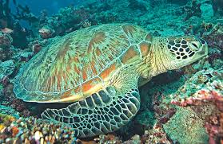

A Importância da Conservação
A tartaruga-verde, tartaruga-aruanã ou só aruanã é uma tartaruga marinha da família dos queloniídeos. É o único membro do género Chelonia.

Nome científico: Chelonia mydas Peso: 160 kg (Adulto) Estado de Conservação: Em perigo (Decrescentes) Classe: Reptilia Espécie: C. mydas Família: Cheloniidae Filo: Chordata